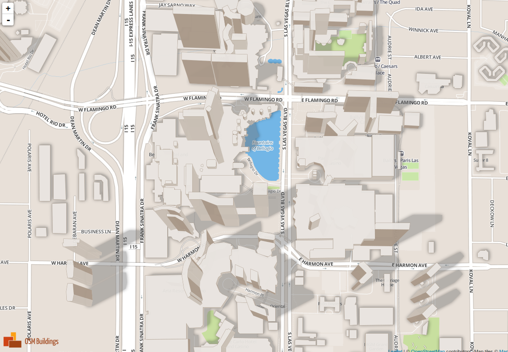
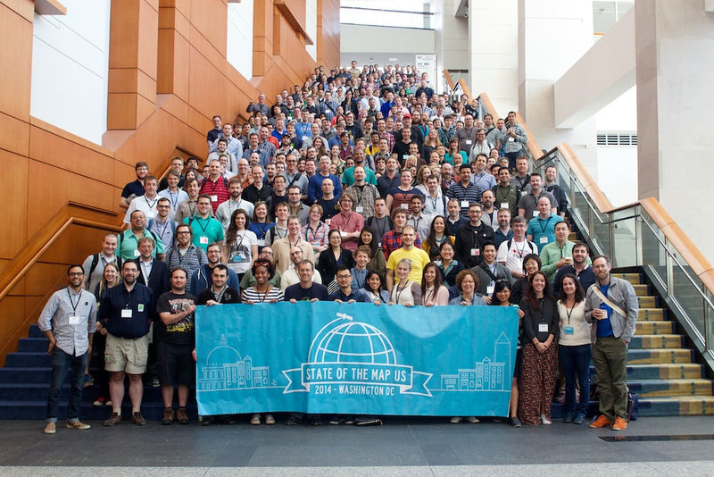

Simon Poole
OSM Contributor Stats after 3 quarters: Already past last year
osm.org/user/SimonPoole/diary/24000
OSM News
October 2014
Maproulette updates
(see maproulette.org)
Ways need smoothing and
Crossing ways done!
Indoor tagging proposal.
Based on work from SOTM-EU 2014
(see OSM wiki)
Designed to work with
"Simple 3D Buildings" proposal
Example: osmbuildings.org

HOT Mapping areas of west Africa's Ebola Outbreak
mapbox.com/blog/ebola-numbers
You can help!
hot.openstreetmap.org/get-involved
Nominatim update: 2.3.0
Try latest Nominatim at:
nominatim.openstreetmap.org
OSM-US Election Results
New board:
About OSM-US:
"We strive to support the OpenStreetMap project in the United States through fostering awareness, ensuring broad availability of data, continuous quality improvement, and an active community."
mvexel: "The coming weeks we will be busy with a few things. Firstly, the transition phase getting the new members up to speed. Secondly, finalizing the State Of The Map US 2015 bid selection process. And finally, working our way through the final administrativia involved with becoming a 501(c)(3) registered charity."
Details here.
 flickr / Harry woodOpenStreetMap-carto v2.22.0
Changelog and source code on Github: github.com/gravitystorm/openstreetmap-carto
Simon Poole
OSM Contributor Stats after 3 quarters: Already past last year
osm.org/user/SimonPoole/diary/24000
Recent and Upcoming Events
Trail Mapping in the Blue Hills
10/19
Coming up:
US Fall 2014 #mapathon
11/15 (tentatively)

Alex Barth:
Blog post on #mapathons
State of the Map 2014
Buenos Aires, November 7-9
www.stateofthemap.org
Lars Ahlzen lars@ahlzen.com